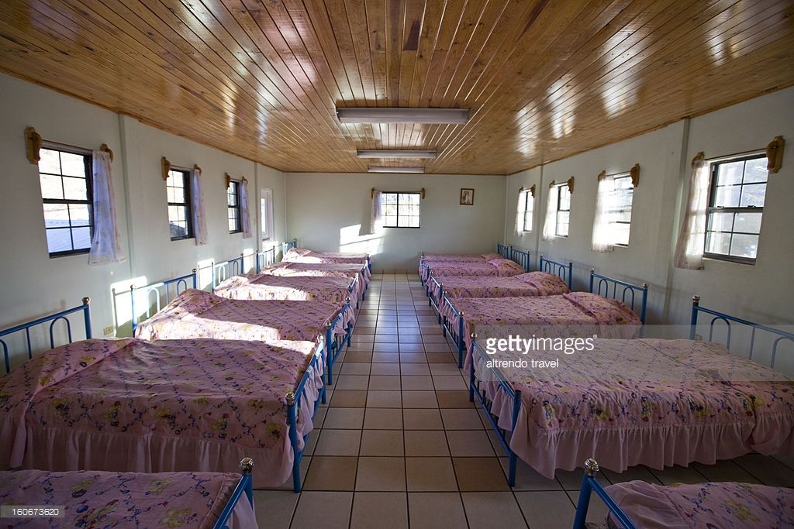
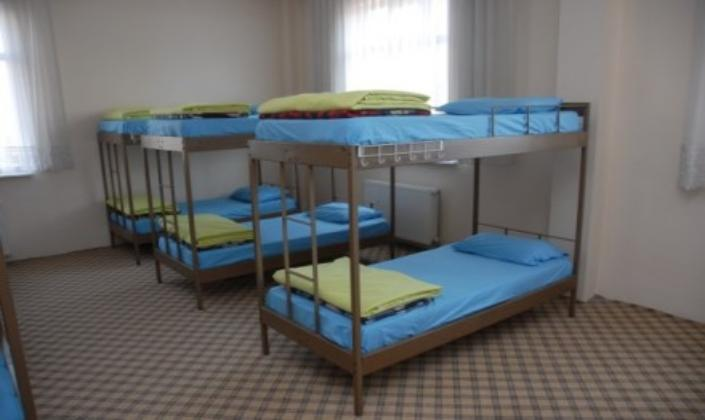

  SKYLIMIT has been the leading primary school that has been offering dormitory services to its pupils ,staffs and teachers within the area. The domitories have been allocated to pupils according to their classes this is to prevent quarries and fights with other students. Total number of domitories are three with spacious rooms with beds that are comfortable to the students and the materials that makes their night well. Each domitory has a prefect who manage the rooms by ensuring the rooms are clean every day and who to wash according to the timetable. The rooms are allocated from class 1 to 3 pupils. The second domitory is allocated to pupils in class 4 to 6 and the other bedroom is allocated for only class 7 to class 8 pupils.
Transport services are for those students who are day scholars. They are ferried from their homes to school everyday from Monday to Friday.Each pupil is supposed to pay amount of fees for the transport expenses. These are some pictures of the school busses. With the description in the sides of name of school.
Pupils are provided with breakfast ,lunch and supper for the boarding pupils. Breakfast is from 10:00AM to 10:30AM,lunch 1:00PM to 1:40 PM and supper from 6:30PM t0 7:20PM. there is a convinient dinning room which is always clean and accomodates for both day scholars and boarding pupils.

Prep time which start at 8:00PM pupils are suppose to be in library where most of the books and other resources are available. The building has new sylabus books and revision books whic have been recomeded by the teachers.
Pupils are erolled to computer program as another subject .This is to ensure that the pupils have knowledge on computer terms and applications.From standard one to standard eight are supposed to take the course as its a requirement of the academic qualification.